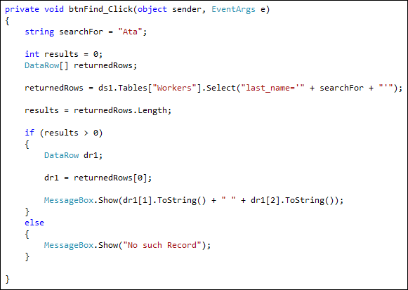

Find a Record
A useful feature to add is a Find button. When a find button is clicked, you then display the record that the user was searching for. Or display a "Not found" message if there were no matching records.
So add a new button to your form. Set the Text property to Find, and the Name property to btnFind. Double click your button to get at the coding window.
There are quite a few different ways you can implement a search. The method we'll use is to Select a row from the dataset. We'll allow a user to search using a last name.
Add the following three lines to your btnFind code:
string searchFor = "Ata";
int results = 0;
DataRow[] returnedRows;
The first variable sets up a string called searchFor. This is obviously the record we want to find. We've hard-coded the value, here, and just entered a last name from our database table. But you'd want this value to come from a text box on your form.
The second variable, results, will be used to tell us whether or not any results were found.
The third line is a DataRow array, which we've called returnedRows. We're using an array because more than one record might be found. Each record will then be stored in a position in the array.
To get at a particular Row in your Dataset, you can use the Select method. Here's the code. It's a bit long, so we've had to spread it over two lines. It should be one line in your code:
returnedRows = ds1.Tables["Workers"].Select("last_name='" + searchFor + "'");
So you start with your Dataset, which was ds1 for us. Then you need the name of a Table in your Dataset. We want to search the "Workers" table. After a dot, we have the Select method:
Select("last_Name=' " + searchFor + " ' ");
It looks a bit messy with all those quote marks. But first we have an outer pair:
Select(" ");
Inside of these two double quotes, we have this:
last_name=
You need to type the name of a Column from your Dataset, here. We're using the last_name Column. But we could have used the first_name Column instead:
first_name=
The Column names are the same ones we used in our database table. But notice the equals sign. After that, you need a value to search for. This needs to go in single quotes. So if you wanted to hard-code a last_name value it would be this:
Select("last_Name='Ata'");
We're using a variable name (searchFor), instead.
The Select method allows you to use other SQL keywords. If you don't want an exact search, for example, you can use Like instead of =.
Select("last_name Like 'Ata'")
Note where the single quotes are - surrounding the text you want to search for. Because our search used a variable, we're using plus symbols to concatenate. Which is why it's so messy!
If a row is found, it will then be stored in the returnedRows array. To get a count of how many rows were found, we can used this code:
results = returnedRows.Length;
This just uses the Length property of the returnedRows array. The length is how many items are in the array. If it's greater than zero, it means we've found a match. We can use an if statement to check:
if (results > 0)
{
//RECORD FOUND
}
else
{
MessageBox.Show("No such Record");
}
If a record is found, we need to get at the values in the Columns. We can create a new Row for this:
if (results > 0)
{
DataRow dr1;
dr1 = returnedRows[0];
}
We now set up a DataRow called dr1. We want the first returned Row to be stored here. The first Row is returnedRows[0];
Putting it all together, here's the full code for the search:

Notice the line that displays a message:
MessageBox.Show(dr1[1].ToString() + " " + dr1[2].ToString() );
Because dr1 is now a DataRow, you can access its data by either using the Column name, or the index number. So these lines return the same values:
dr1["job_title"]
dr1["first_name"]
dr1["last_name"]
dr1[3]
dr1[1]
dr1[2]
It's up to you which ones you want to use.
But try your programme out. Click your Find button and a search result should display.
Close your programme down. Change the name of the person being searched for and try again.
Exercise Q
Add a text box to your form. Get the name of the person from this text box,
rather than using the hard coded value that you have at the moment.
OK, that's enough of databases! It's a huge subject, obviously, and many books
have been written on the subject. We've only touched the surface in these lessons,
and encourage you to delve deeper. Especially if you want a job as a programmer!
In the next section, we'll take a look at multiple forms.